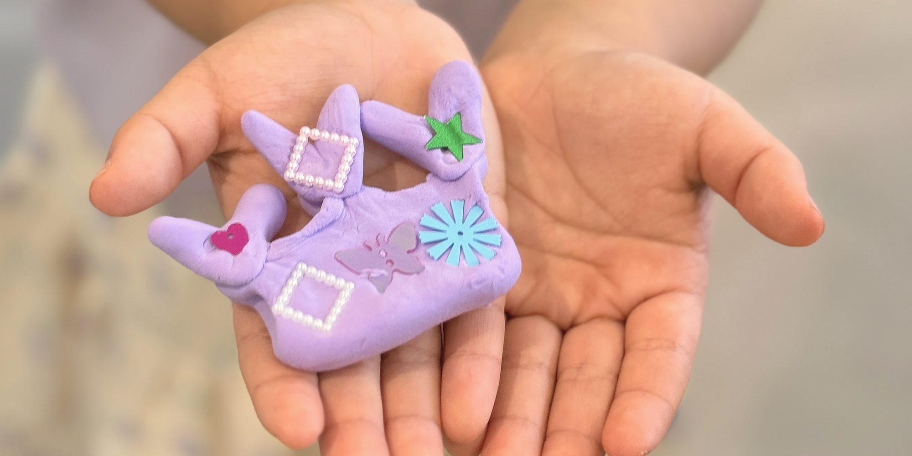
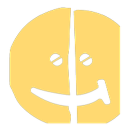

OLI HANNA — 올리한나 이야기
아이들은 원래, 감각이 살아있어요.
— 제 감각도, 살아있었더라고요.
안녕하세요, 올리한나예요. 감각을 깨우는 환경 디자이너.
It’s not about doing,
it’s about Being.

PLAY — 답이 없는 판
재료를 끌어서, 옮겨보세요.
정답은 없어요.
마음에 드는 재료를 골라, 마음 가는 대로 표현해보세요 — 그게 나만의 작품이 돼요.
아이들 손에서는 매일, 훨씬 더 개성 있는 작품들이 태어나요.
진짜 재료들은 하남에 있어요. 프로그램 보기
PROGRAM — 프로그램
18개월부터 시니어까지,
누구나 자기 자리가 있어요.
PROOF — 참여자들의 리얼 후기
어머니들이 직접 써 주셨어요.
-
추천 의향
89%
10점 만점, 9~10점.
-
가장 큰 힘
89%
성장 비결 1위 —
자유로운 탐색 환경과 재료. -
함께한 시간
3년
하남 · 쪼이 120명.
1 / 3
2026 학부모 설문
"자기 자신을 표현하는 것이 당연한 아이들이 많아지기를."
"아이들이 살아 숨 쉴 수 있는 공간 :)"
"아이들의 창작과 자유성을 위해 — 너무 멋집니다!!"
"자유로운 분위기에서 아이들이 더 즐거워해요."
"아이가 성장하는 시간, 늘 감사합니다."
"창의력과 상상력이 자라나는 공간이기를!"
1 / 6
한 쪼이의 하루 —
가기 전날 —
"인조이풀 가는 날을 엄청 기다려요."
가는 날 아침 —
"아침부터 엄청 행복해해요."
다녀온 저녁, 집에서 —
"이젠 집에서도 계속 그리고 만들어요."
몇 달이 지나면 —
"표현이 더 디테일해지고, 숨어 있던 감수성이 펼쳐져요."
그리고 어느 날, 아이가 —
"이건 내가 생각한 거예요."
한두 해를 보내고, 자기 세계를 안고 다음으로 가요.
그 시기를 제대로 — 그게 인조이풀의 일이에요.
ABOUT — 더 깊이
ONLINE — 하남에 안 와도
NEWSLETTER가득하계우리들의 풍성한 계절 이야기 — 곧 첫 호✉
KIT하루 한 조각텀블벅 펀딩 준비 중 — 30일, 내 삶을 편집하는 키트✦
SHAREPopfolio나만의 전시 링크 · 오픈 예정↗

워크숍으로 만나요.
읽는 것보다 한 번 만드는 게 빨라요 — 해보고, 정하세요.
쪼이와 함께첫 타임 예약키즈팝 1회 · 40,000원네이버에서 날짜 고르기 →
어른인 나원데이 ‘채워짐’올드팝 1회 · 50,000원네이버에서 날짜 고르기 →
우리 팀과워크숍 제안기업 · 기관 · 학교2시간 60만원부터 →
일정이 안 맞거나 인원이 많으면 카카오채널로 말씀해 주세요 — 맞춰서 열어드려요.